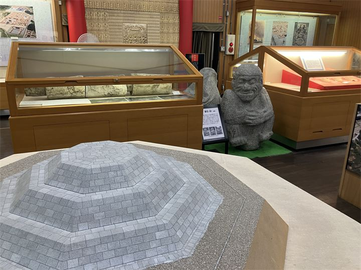
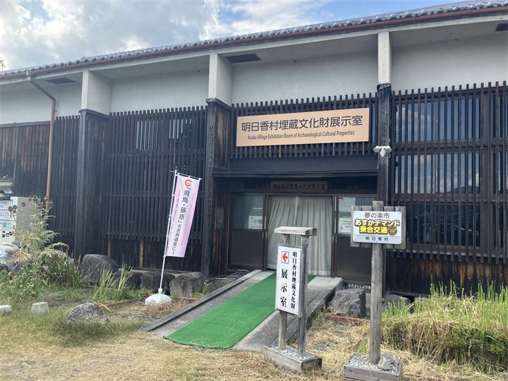
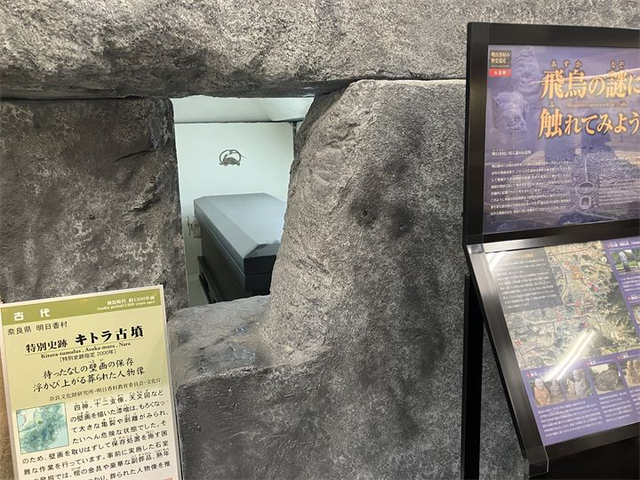

発掘された飛鳥の歴史資料
明日香村で発見された土器や瓦、石造物などを展示し、古代の暮らしを知ることができます。

明日香村埋蔵文化財展示室は、明日香村内の発掘調査で出土した遺物や歴史資料を展示する施設です。 飛鳥時代の宮殿跡や寺院跡、古墳などから発見された貴重な資料を通して、明日香の歴史や古代文化を学ぶことができます。 観光地としての華やかな飛鳥だけでなく、発掘調査によって明らかになった古代の暮らしを感じられる施設です。
| 営業時間 | 9:00〜17:00 |
|---|---|
| 定休日 | 土曜日・日曜日・祝日・年末年始 |
| 料金 | 無料 |
| 所要時間 | 20〜30分 |
| 駐車場 | あり（無料） |
| アクセス |
近鉄橿原神宮前駅から奈良交通バス「飛鳥」方面行き 「飛鳥大仏」下車 徒歩約5分 |
| 地図 | 地図はこちら |

明日香村で発見された土器や瓦、石造物などを展示し、古代の暮らしを知ることができます。

宮跡や寺院跡などの発掘成果を紹介し、飛鳥時代の姿を分かりやすく伝えています。
明日香村では長年にわたり発掘調査が行われ、多くの宮殿跡や寺院跡、古墳が発見されています。 埋蔵文化財展示室では、これらの調査によって得られた資料を保存・公開し、飛鳥の歴史を後世へ伝えています。